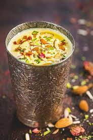

Badam Shake

Description
Badam Milk is a traditional Indian drink made with
almonds (or almond flour), cardamoms, saffron,
whole milk and sugar. Almonds are ground to a
smooth paste and simmered with full-fat milk &
spices for a delicious, fragrant and protein-rich
drink. It is served warm or chilled and is great
for kids and grown-ups alike.
Ingredients
- Spices:Traditionally cardamoms are used. But a pinch of saffron, turmeric, nutmeg and black pepper are other spices that can be used. I have even seen gulkand (rose petal jam), rose water and kewra water being added. Each spice has a specific purpose and infuses a flavor-profile so use what you like.
- Milk:Traditionally full-fat cow’s milk is used for richness but goat milk also works great in this recipe.
- Sweetener: se any kind of sweetener you prefer. But sugar is a staple and people also use Rock Sugar (mishri) for its cooling properties. But avoid using jaggery as it can split the milk. If you want you can also use date syrup or dates (blend with almonds) but the flavor is different.
Steps
- Omit this step if you are using almond flour. These steps are for using raw almonds. Add 20 to 24 almonds to a bowl. Rinse them well and soak for 30 mins in hot water.
- Peel the skin and add them to a blender jar along with ⅛ teaspoon ground cardamom or 2 whole green cardamoms, 2 teaspoons organic sugar and a pinch of saffron (optional). Pour half cup milk and blend to a smooth paste. I use chilled milk as this avoids the blender from becoming hot.
- You should have a smooth paste else you need to strain the milk later. (The grits in the milk can irritate the throat)
- On a medium flame, bring 1½ cups milk to a boil in a thick bottom pan/ pot.
- Stir in the ground almond mixture into the boiling milk. Stir well and simmer for 2 to 3 minutes until really bubbly and frothy. Taste test and add more sugar or flavorings if you want. Cool down or chill the milk (covered) in the refrigerator for a few hours.
- Whisk well with a fork or a whisk until uniform and pour to serving glasses/ cups. It keeps good in the refrigerator for 2 days. If you want you may garnish with thin sliced almonds or pistachios. I garnished mine with saffron.
Home